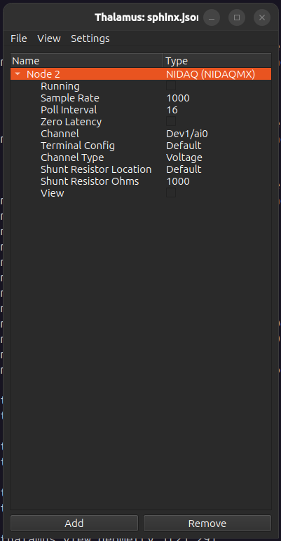

NIDAQ¶

The NIDAQ node is an interface for reading signals from a National Instruments DAQ.
Properties¶
Running: Read data from DAQ. When true this node will generate one signal for each DAQ channel in
Channel.Sample Rate: Sample rate to for reading from DAQ.
Poll Interval: How often to generate data in ms (Sample Rate = 1000 and Poll Interval = 16 generates 16 samples of data every 16 seconds)
Zero Latency: Ignore
Poll Intervaland generate data immediately for each sample. Will typically cause buffer overflows for high Sample Rates.Channel: A list of comma separated DAQ channels and channel ranges to read from.
Terminal Config: The DAQ terminal config to use.
Channel Type: Read voltage or current.
Shunt Resistor Location: Location of shunt resistor to use while recording current.
Shunt Resistor Ohms: Resistence of shunt resistor to use while recording current.
View: Visualize signals in a new window.